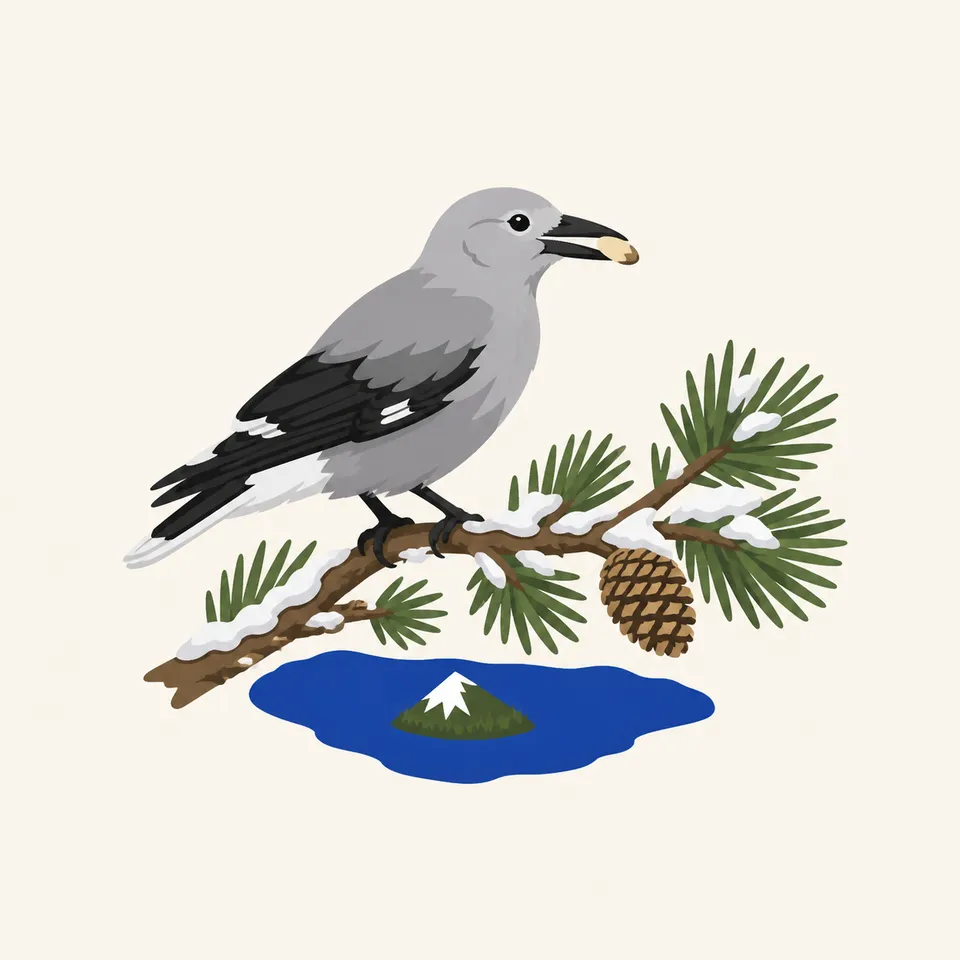
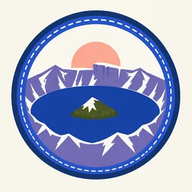

01
Wizard Island
It is a cinder cone that kept growing while the lake rose. Only a small part of the post-caldera volcanic pile shows. The island in the painting is that visible tip.
TrailMark Archive Edition
Oregon | Mount Mazama
Founded May 22, 1902. The deepest lake in the United States, in a caldera about 7,700 years old.
Archive No. TM-CRLA-033
National Park since 1902
Collection Mount Mazama
Park Overview
Crater Lake National Park was founded on May 22, 1902. The lake inside it is the deepest in the United States, with an average depth of 1,943 feet.
The history page puts people at the eruption and European contact in 1853. On June 12 of that year, John Wesley Hillman's party found the lake. A prospector named Skeeters suggested Deep Blue Lake. In 1862 Chauncy Nye published the first description and called it Blue Lake. William Gladstone Steel saw it in 1885 and spent seventeen years getting the park.
The lake page gives the shape. An eruption about 7,700 years ago collapsed Mount Mazama, then about 12,000 feet tall, into a caldera 5 to 6 miles across and 0.7 miles deep. Hillman Peak, 8,151 feet, is the highest point on the rim. Mount Scott, 8,929 feet, is the highest point in the park.
Emotional Thesis
The header centers Wizard Island in a ring of cliffs, with snow and firs in front. Wizard Island started before rain and snow had filled the caldera. Three other volcanoes grew underwater. The last eruption on Wizard Island's east flank was about 4,800 years ago.
Evaporation and seepage balance the filling. The lake page says the water does not go past that 1,943-foot average, about 4.9 trillion gallons, with about 34 billion gallons gained and lost each year. Clarity averages 102 feet. The lake is one of the ten deepest on earth, and it rarely freezes.
Landscape Highlights
01
It is a cinder cone that kept growing while the lake rose. Only a small part of the post-caldera volcanic pile shows. The island in the painting is that visible tip.
02
Hillman Peak is the high point of the rim at 8,151 feet. Mount Scott, off that high rim line, is taller. The collapse dropped a 12,000-foot volcano into a hole 0.7 miles deep.
03
The lake page describes a 30-foot mountain hemlock log, three feet of it above water. Joseph Diller first tracked it in 1896 and called it a spectacle curious enough to ignite the imagination. Its wood is carbon dated beyond 450 years. Nobody knows when it entered the lake.
Wildlife
Mazama newts are endemic to Crater Lake. The lake page says they were the top predator before fish and crayfish, and that they show less red and less toxin than other rough-skinned newts.

01
Seven fish species were introduced between 1886 and 1941. Two survived: rainbow trout and the salmon the page spells Kokonee. Crayfish, introduced in 1915 as fish food, have spread along much of the shore and affect the newts. The page also says the shore has been greening with algae as the crayfish spread.
02
The nature index says more than 700 native plant species handle a short season and volcanic soils, and that about 16 wildfires a year are mostly lightning.
03
The extra drawing is a gray bird on a snowy pine, with a tiny lake below. The pages opened here do not name that bird. The caption does not invent one.
Geology
No rivers feed the lake. The lake page's balance is rain, snow, evaporation, and seepage.
01
As of 2020, average snowfall was 42 feet a year, down from 51 feet in the 1930s. Average yearly precipitation was 67 inches.
02
The caldera is 5 to 6 miles across and 0.7 miles deep. Wizard Island's last flank eruption was about 4,800 years ago.
03
The water volume is why the lake rarely freezes, unlike other Cascade lakes. Heat stored in that volume is the page's reason.
The snowfall figure is the lake page's, as of 2020. Which rim roads are open is a current NPS question. The painting's snow is the normal condition, not a forecast.
The lake rarely freezes over because of its volume. A skim of ice in a photograph would be news, not the average.
Clarity averaging 102 feet is a measurement, not a guarantee for the afternoon you arrive. Research updates live on the park's limnology pages.
About 16 wildfires a year, most from lightning, is the nature index. Smoke and trail closures follow the year, not this paragraph.
Photography
A blue rectangle without the island or the cliff is a swimming pool. The caldera is the subject.
01
It is off center in many views and dead center in this header. Either way, include it so the lake has a scale.
02
Focus sits high enough to keep the rim. A crop that saves only the foreground firs loses the caldera.
03
A 30-foot log with three feet showing is easy to miss from the rim. Do not add it to a picture where it is not.
Field Notes
Hillman's party called it the bluest water they had seen. The park spent the next half century learning how little lives at the top of that food chain on purpose.
TrailMark Field Notes

Badge Story
The mark is the caldera seen from above: deep water, Wizard Island, and a cliff. A generic alpine lake has an outlet.
Island off center or centered, rim around it.
Snow is honest. The average, as of 2020, is 42 feet a year.
Do not borrow Yellowstone's basin. This blue is cold and closed.
Archive No.033
LocationMount Mazama
ReleaseCaldera Mark
Stewardship / Safety
The fish and the crayfish are introductions. The newt is not. The rim in winter is a road question.
Do not add anything to the lake. The surviving trout and salmon, and the 1915 crayfish, are already the warning.
Mazama newts are endemic. The page ties their trouble to crayfish. Watch, and do not handle them.
Snowfall measured in the tens of feet means a rim that looks obvious in July and is not a promenade in January. Read the NPS road report.
The Old Man is a log, and it is also a monitored object. Leave it.
Current conditions, fees, and alerts are on the National Park Service site.
Continue the Archive
Olympic is the wet forest to the north. Yellowstone is the other volcanic park already on the shelf. This one is a lake that replaced a summit.